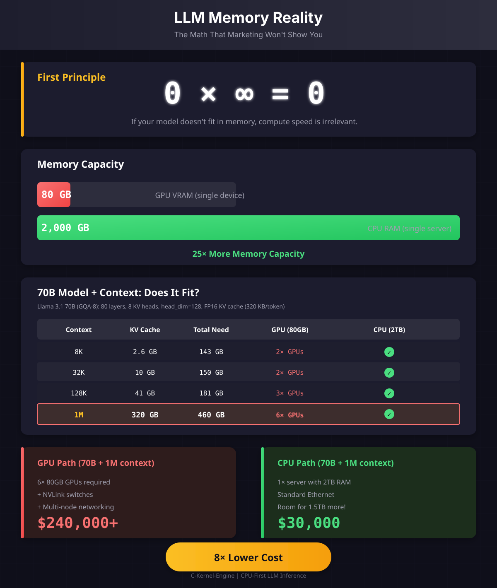

For Qwen2-0.5B (hidden_dim=896, intermediate=4864, 24 layers):
| Operation | Writes per Layer | 24 Layers Total |
|---|---|---|
| RMSNorm output | 896 × 4 = 3.5 KB | 84 KB |
| Q, K, V projections | 3 × 896 × 4 = 10.5 KB | 252 KB |
| Attention output | 896 × 4 = 3.5 KB | 84 KB |
| O projection | 896 × 4 = 3.5 KB | 84 KB |
| MLP gate + up | 2 × 4864 × 4 = 38 KB | 912 KB |
| MLP down | 896 × 4 = 3.5 KB | 84 KB |
| KV cache (new token) | ~1 KB | 24 KB |
| Final logits (once) | - | ~600 KB |
| Total per token | ~63 KB | ~2.1 MB |
KV Cache Size = 2 × n_layers × n_kv_heads × head_dim × context_length × bytes_per_element
For Qwen2-0.5B (FP32 KV cache):
= 2 × 24 × 2 × 64 × context_length × 4 bytes
= 24,576 × context_length bytes
= 24 KB per token of context
For Qwen2-0.5B (FP16 KV cache):
= 12 KB per token of context
| Context Length | KV Cache (FP32) | KV Cache (FP16) | Fits in GPU VRAM? | Fits in CPU RAM? |
|---|---|---|---|---|
| 2K tokens | 48 MB | 24 MB | Yes (80GB) | Yes (4TB) |
| 8K tokens | 192 MB | 96 MB | Yes | Yes |
| 32K tokens | 768 MB | 384 MB | Yes | Yes |
| 128K tokens | 3 GB | 1.5 GB | Tight with model | Yes |
| 512K tokens | 12 GB | 6 GB | Leaves little for model | Yes |
| 1M tokens | 24 GB | 12 GB | No room for 70B model | Yes |
| Context | KV Cache (FP16) | + Model (140GB) | Fits H100 (80GB)? | Fits 2TB Server? |
|---|---|---|---|---|
| 8K | 2.6 GB | 143 GB | No (need 2×) | Yes |
| 32K | 10 GB | 150 GB | No (need 2×) | Yes |
| 128K | 41 GB | 181 GB | No (need 3×) | Yes |
| 1M | 320 GB | 460 GB | No (need 6×) | Yes |
| Parameter | Value | Explanation |
|---|---|---|
n_layers | 80 | Number of transformer layers |
n_attention_heads | 64 | Query heads per layer |
n_kv_heads | 8 | KV heads (GQA: 8 groups, each serves 8 Q heads) |
hidden_dim | 8192 | Model hidden dimension |
head_dim | 128 | = hidden_dim / n_attention_heads = 8192/64 |
KV_per_token = 2 × n_layers × n_kv_heads × head_dim × bytes
= 2 × 80 × 8 × 128 × 2
= 327,680 bytes
= 320 KB per token
8K context: 8,192 × 320 KB = 2.62 GB 32K context: 32,768 × 320 KB = 10.5 GB 128K context: 131,072 × 320 KB = 41.9 GB 1M context: 1,048,576 × 320 KB = 335 GB
Without GQA (Multi-Head Attention), 70B would need 64 KV heads instead of 8:
MHA (64 KV heads): 2.56 MB/token → 128K = 335 GB KV cache
GQA (8 KV heads): 320 KB/token → 128K = 42 GB KV cache
8× smaller!
| Model | Parameters | KV per Token (FP16) | 128K Context KV | 1M Context KV |
|---|---|---|---|---|
| Qwen2-0.5B | 0.5B | 12 KB | 1.5 GB | 12 GB |
| Llama-3-8B | 8B | 64 KB | 8 GB | 64 GB |
| Llama-3-70B | 70B | 320 KB | 40 GB | 320 GB |
| Llama-3-405B | 405B | 1.2 MB | 150 GB | 1.2 TB |
Memory pattern: Bandwidth-bound
Bottleneck: Memory bandwidth, not compute
Memory pattern: Compute + bandwidth
Bottleneck: Both compute and memory
| Prefill Length | Activation Memory | + KV Cache |
|---|---|---|
| 256 tokens | ~400 MB | ~6 MB |
| 1K tokens | ~1.5 GB | ~24 MB |
| 4K tokens | ~6 GB | ~96 MB |
| 16K tokens | ~24 GB | ~384 MB |
The common misconception: "FP16 saves memory bandwidth."
The reality: FP16 doubles context that fits in L3 cache.
| L3 Cache Size | Max Context (FP32 KV) | Max Context (FP16 KV) | Benefit |
|---|---|---|---|
| 6 MB (laptop) | ~6K tokens | ~12K tokens | 2× more "hot" context |
| 32 MB (desktop) | ~32K tokens | ~64K tokens | 2× more "hot" context |
| 128 MB (server) | ~128K tokens | ~256K tokens | 2× more "hot" context |
| 384 MB (EPYC) | ~384K tokens | ~768K tokens | 2× more "hot" context |
Total Memory = Model Weights + KV Cache + Activation Memory
For 70B model at 128K context (FP16 weights, FP16 KV):
Model: 140 GB
KV Cache: 40 GB
Activations: 10 GB
──────────────────
Total: 190 GB
GPU (H100 80GB): DOESN'T FIT
GPU (3× H100): Fits, but $120K+ and NVLink complexity
CPU (2TB server): FITS with 1.8TB headroom
Run 10× concurrent users!
$30K total cost
Pattern: Every model × context combination hits a wall.
Pattern: Memory scales with need, not with GPU count.
| Claim | Marketing | Reality |
|---|---|---|
| "GPUs are faster" | Higher FLOPS | LLM inference is memory-bound, not compute-bound |
| "80GB is enough" | Fits 40B model | 70B + long context needs 200GB+ |
| "Just add more GPUs" | Scale with NVLink | $40K per GPU, max 8 per node, then Ethernet anyway |
| "HBM is fast" | 3.3 TB/s bandwidth | Irrelevant when model doesn't fit (0 × ∞ = 0) |
| "Enterprise ready" | DGX systems | $500K+, still limited by VRAM per model |
GPU vs CPU memory comparison for LLM inference:

Click to view full size